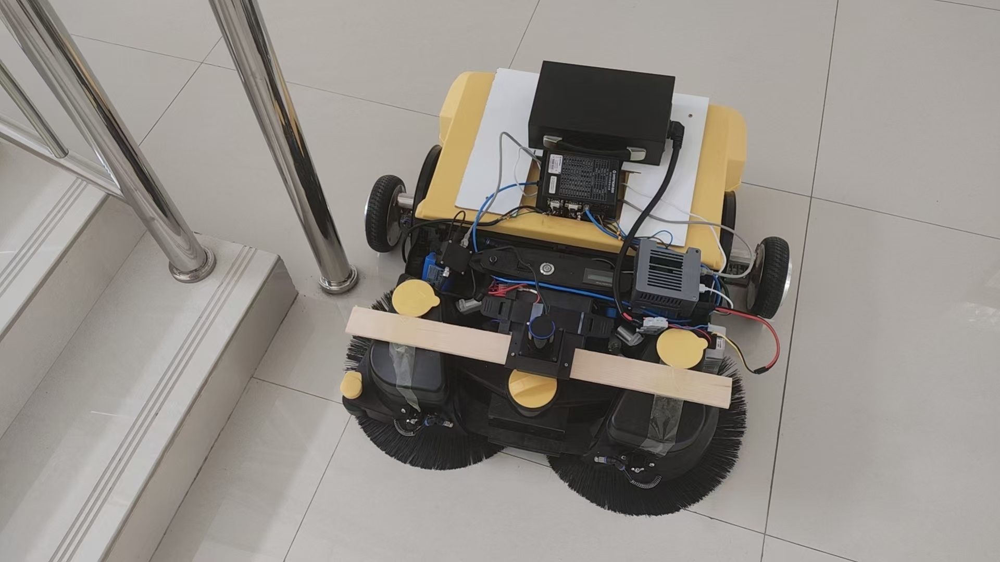
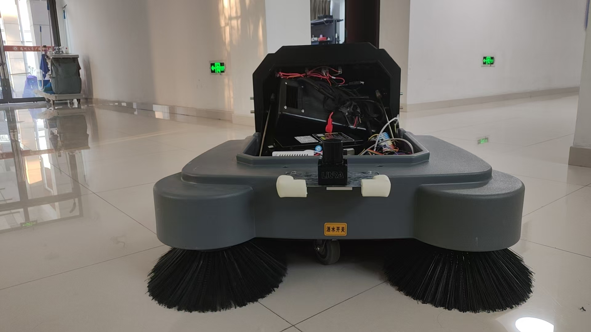
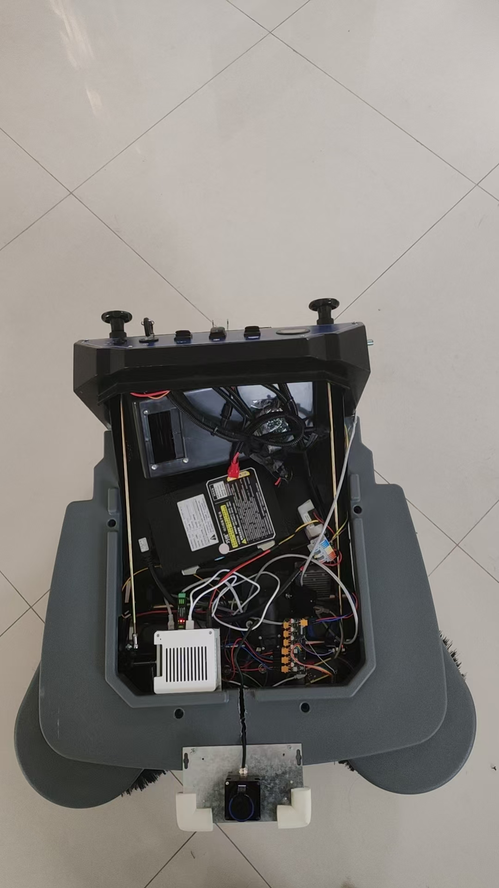
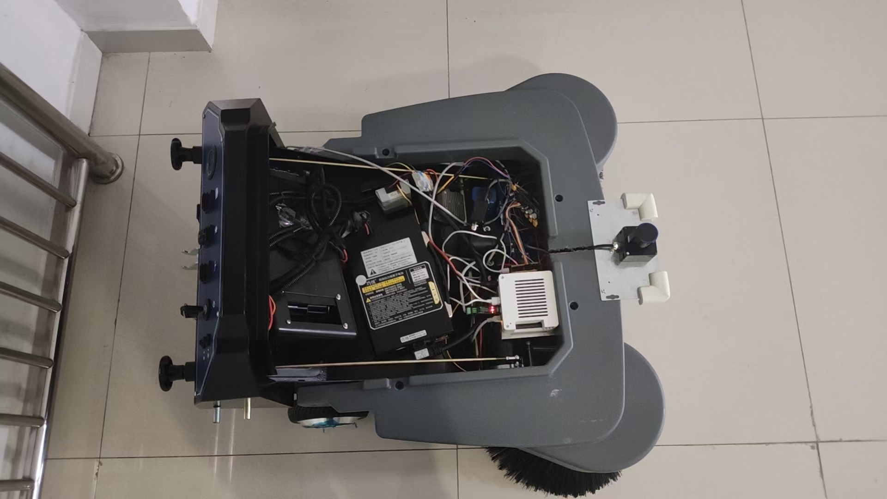
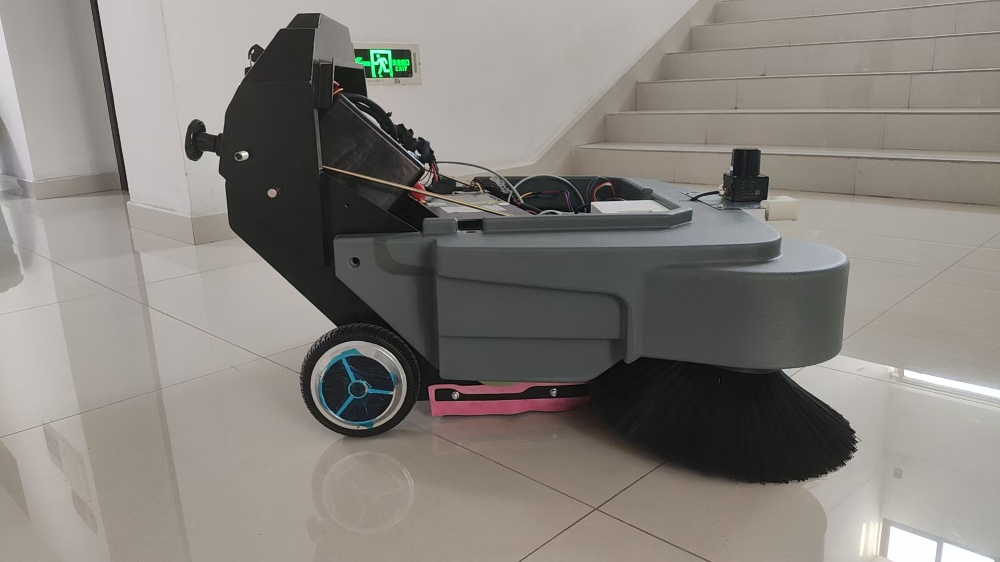
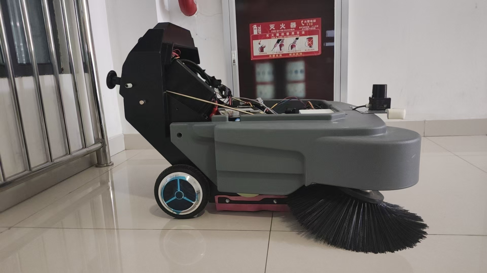

定义作业区域
在真实固定地图上设置位置、框选多边形，保留台阶等禁行区。把区域边界、车体占地与作业宽度作为规划约束，避免把“地图上看起来能过”直接当作整车能过。
ROBOT SYSTEMS / 2026
让地图上的一条覆盖路径，成为小车可执行、可检查、可重复的现场任务。
这台扫地机的自动化改造由我独立完成：从改电路、自己走线、接入底盘与传感器，到基于 ROS 2 / Nav2 编写自主导航、覆盖执行和 Web 控制台的应用代码。我把硬件与软件接成自动扫地流程，再逐项解决转弯点云对齐、任务执行与实车重复测试中的问题。
独立开发 / 从硬件到软件
我的工作贯穿实物改造和软件实现。这六张实拍记录了原型搭建、打开机舱后的电气与布线，以及整车集成状态；下方的三段视频接着展示控制台操作与实车运行。
项目原始实拍 · 点击任意图片可查看原图

从计算设备、控制器的安装连接开始，我自己改电路、走线，把驱动与清扫部件接入开发平台，逐步搭起可联调的硬件基础。

前置雷达、底盘和双侧刷在同一台车上协同工作。我完成传感器接入与车端联调，让导航定位和清扫执行落到真实设备上。

电路改造、线束连接和逐项接线检查由我完成。保留完整机舱视角，可以直接看到电池、电子设备与实际走线的布局。

我把硬件接口接入 ROS 2，让底盘反馈与传感器数据能够支持定位、导航和任务执行。实物接线和软件排查，是同一项工作的两端。
在 ROS 2 / Nav2 基础上，我编写项目所需的接入与应用代码：打通定位导航，把框选区域转成覆盖任务，衔接分段执行，再通过 Web 控制台完成操作。转弯时扫描与 TF 的时序排查、实车重复测试和问题记录，也由我持续完成。

我将驱动接口和反馈接入导航流程，现场联调时同时核对控制指令、底盘状态与实际运动，让软件里的任务对应到真实车轮的动作。

我把区域选择、覆盖规划、实车执行和清扫控制接成完整流程。下面的视频与工程记录进一步展示操作过程、排障方法，以及已经测试的运行范围。
01 / 现场演示
三段原始录屏保留了不同阶段的界面和现场画面，均为无声视频，可展开全屏查看。先看最新的覆盖控制台，再对照首次联调与转弯片段；短视频用于展示过程，完整任务结果以文末测试记录为准。
地图上的作业段、转场线和台阶禁行区与机器人位姿放在同一视图中，右上角保留现场画面。这里体现的是我把规划结果、执行状态和真实场景接入同一操作流程的工作，而不只是绘制一条路径。
画面同时保留地图、路径、控制状态和监控窗口。它记录了早期把 Web 操作接到车端执行的联调阶段，也提供了后续调整界面与排查执行问题的对照。
现场窗口可以看到小车在平台区域移动和转向，背景是覆盖控制台。这个片段用于观察实际动作；点云时序、定位质量和完成判定仍需要结合时间戳与执行日志分析，不能仅凭动画判断。
02 / 我负责的链路
在真实固定地图上设置位置、框选多边形，保留台阶等禁行区。把区域边界、车体占地与作业宽度作为规划约束，避免把“地图上看起来能过”直接当作整车能过。
将覆盖作业段与安全转场分开组织，把路径交给执行器，再由 Nav2 完成导航。浏览器负责交互与展示，规划模块不直接发送底盘速度。
检查定位、TF、扫描和底盘状态，速度指令经过平滑与碰撞监控再到 CAN 底盘。重定位、地图切换或数据过期会影响任务准入，不能用按钮已响应代替小车已具备运行条件。
同时记录任务状态、位姿变化、累计行走、路径进度与最终停车，把导航返回值和实车证据放在一起检查。重复测试保留失败轮次，便于分清定位、控制与通信层的问题。
03 / 关键工程问题
项目中最花时间的部分，是不同模块单独正常、接在一起却失效。我把排查对象分成数据是否新鲜、坐标是否一致、任务是否绑定正确，以及指令是否真正到达底盘，逐层缩小范围。
直行时尚可，转弯时扫描与墙面错开。网页投影延迟、扫描自身采样时间与实际定位漂移可能呈现相似画面，必须分开判断。
投影优先查询扫描采集时刻的 map←laser 变换；短暂缺少 TF 时进行有界等待与回退，而不是无限使用旧姿态。当前投影实现还读取新鲜的底盘角速度，按光束采样时间做有界旋转补偿，并使用完整四元数处理雷达姿态。
轮速与 IMU 融合、AMCL 和动态 TF 决定定位链路；页面点云补偿改善显示的一致性。两者分别核查，显示层裁剪或滤波后的“零越界”不等于原始点云零误差，也不等于任何场景都不会漂移。
live_map_view.py · deskew_rate() / project() · wheel / IMU / AMCL / TF
/coverage/get_executor_task_status 超时会让页面无法确认启动结果，即使部分底层节点仍在运行。问题需要沿服务回调检查，不能只增加网页等待时间。
将耗时任务校验与状态查询拆开，状态服务读取缓存快照，结合独立回调组和双线程执行器，避免状态读取被长回调占住。
11 月 2 日记录中，两类状态查询分别通过 10/10 次测试，耗时为 2.4–17.9 ms 与 1.8–14.9 ms；此前部分查询超过 7–12 秒。这是服务响应测试，不是整车启动时间。
task_binding.py · coverage_nav2_client.py · coverage_segmented_executor.py
任务可能停在原地、反复转向，或返回到达却没有完成预期遍历；扫描话题存在，也不代表 Nav2 代价地图正在持续接收并使用它。
把地图版本与任务绑定、实际生效的导航配置、路径进度、控制状态和最终停车连起来检查。重复测试中同步保留底盘就绪丢失与 no_path_progress，避免把所有停车都归因于规划算法。
形成从启动、重定位、生成覆盖路径、分段执行到结果核验的排查顺序，并把代码入口、测试记录与演示保存下来，让后续修改可以复查，而不是依赖一次成功演示。
navigation_profile.py · clean_console.launch.py · coverage_segmented_executor.py
04 / 验证记录
以下数据重新统计自 2026 年 11 月 5 日 R101–R146 的逐轮记录，共 46 次尝试。通过标准对应记录中的 COMPLETED、遍历验证和最终停车确认；这是该场地、小范围覆盖任务的历史结果，不是新增测试，也不是跨场景可靠性结论。
| 轮次 | 结果 | 记录说明 |
|---|---|---|
| R101–R122 | 22 次通过 | 完成遍历，确认最终停车。 |
| R123 | 1 次失败 | 底盘就绪丢失，任务暂停，记录行走 2.78 m。 |
| R124–R136 | 13 次通过 | 完成遍历，确认最终停车。 |
| R137–R142 | 6 次失败 | no_path_progress，累计行走为 0。 |
| R143–R146 | 4 次通过 | 完成遍历，确认最终停车。 |
这些记录支持“在指定场地完成多轮覆盖遍历与停车”的结论。它们没有独立测量清洁率、长时间无人值守能力或定位绝对误差；七次失败也说明持续运行仍需关注底盘状态与导航数据链路。
下载 46 次逐轮记录 · CSV ↓05 / 工程积累
这项工作使用 ROS 2、Nav2、AMCL 等已有基础能力。我的贡献集中在实车集成与问题闭环：组织覆盖任务、接通底盘和浏览器、处理扫描与坐标时序、梳理启动和状态服务，并用现场录屏与逐轮记录检验改动。
把一个界面报错追到回调、TF、代价地图和底盘准入，区分相关现象与真正阻塞执行的环节。
保留统一入口、可读的状态、真实视频和失败记录，使下一次调试有起点，也让项目能力有可检查的依据。